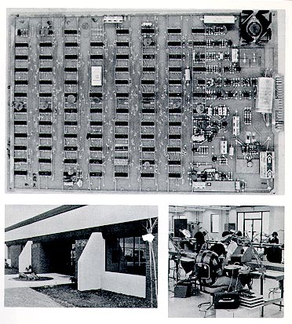

As of January 19, all Video Printed Circuit Board assembly personnel have
been reporting for work at 1320 Bordeaux Drive. The new building
was finally a reality after several months of construction which had aroused
the curiosity of all employees and a few lunch wagons. Moving
to the larger facility means that the Stores group no longer has to beg
for floor space from other departments. Work in progress does not
have to be placed in the aisles and people do not have to climb over the
Football Table in order to enter the lunch room. The two new
wave soldering systems are impressive and imposing. And now,
the Shipping and Receiving departments can be distinguished as two separate groups. The big new building is fast becoming home for the
PCB'ers and it promises to be a productive home.